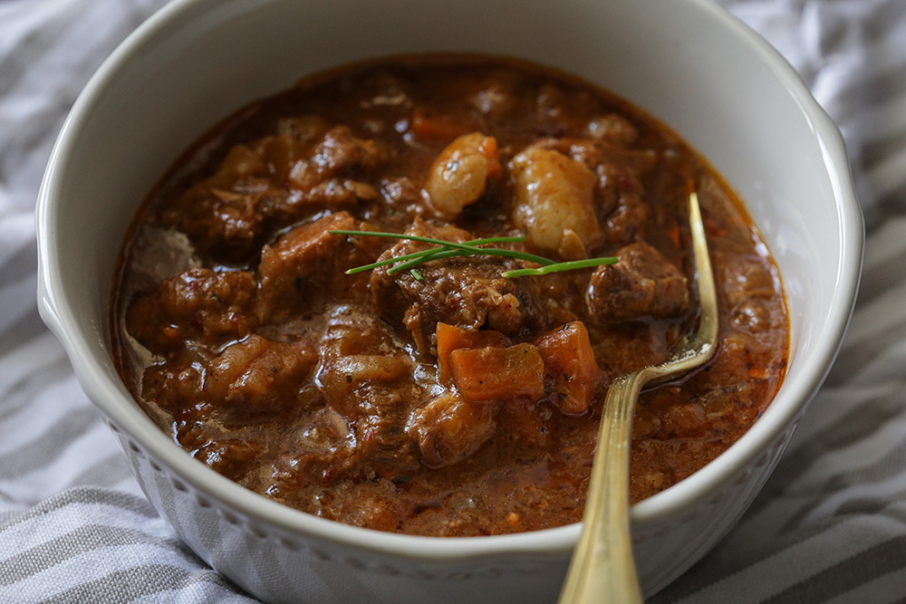

Goulash, Serbian style delicacy

This is a recipee for traditional goulash
Ingridients
Meat
Onion
Mushroom
Garlic
Oil
Steps
stew onions and meat first with a little oil
add mushrooms and black pepper and water
cook for 3 hou
add garlic
Back